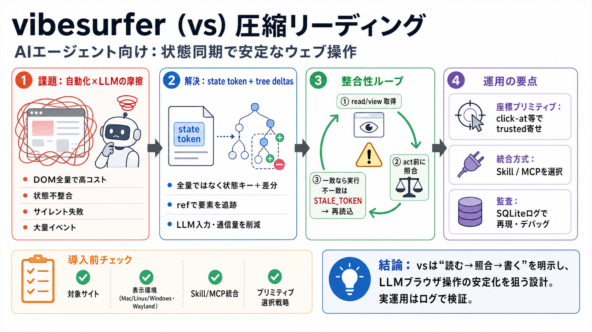

Prospects for future hardware releases : r/LocalLLaMA
[Skip to main content](https://www.reddit.com/r/LocalLLaMA/comments/15ll7or/prospects_for_future_hardware_releases/#main…

毎回DOM全量を送らず、状態トークン＋差分で更新。
a11yツリーを元にref（要素ID）を保持し、クリック対象を指し示す。
tree deltasにより、複数ターンでの変更を“差として”追跡。
不要な全量ダンプを減らし、ループ運用に耐えやすくする。
read/viewでstate token＋差分を取得。
act（クリック/入力）前にトークン整合性を検査。
一致なら実行・不一致ならSTALE_TOKENで失敗→再読込。
エージェントがバイナリを直接コマンドとして実行する想定。
JSON-RPCでツールとして呼べ、環境依存の導入が相対的に容易。
エージェントがMCPを扱えるか／Bash中心か。
設定ミスや整合性（両方式の挙動差）の可能性を考慮。
Mac/Linux/Windowsで内部エンジンを切替（WKWebView / WebKitGTK / WebView2）。
WebKitGTKの座標系がXTest前提で、純WaylandはENGINE_UNSUPPORTEDへフォールバックし得る。
サイト種類（ログイン/通販/SNS等）や表示環境で成功率が変わる可能性。
エージェント側が「どのプリミティブを使うか」を判断できないと期待性能が出にくい。
state token照合＋tree deltasは“状態同期”問題への実装レベルの回答。
Skill/MCP併用や環境要件の言及があり、意思決定しやすい。
STALE_TOKENでサイレント失敗を避ける思想。ただしリトライ戦略はエージェント側にも依存。
trustedイベント最適化が中心に見える一方、認証情報やログ保護の詳細は限定的。
[Skip to main content](https://www.reddit.com/r/LocalLLaMA/comments/15ll7or/prospects_for_future_hardware_releases/#main…
# LLM Architectures of 10 Open-Weight Model Releases in Spring 2026 : r/LocalLLaMA. Skip to main contentLLM Architecture…
Title: LLM Architectures of 10 Open-Weight Model Releases in Spring 2026 : LocalLLaMA use the following search parameter…
153K Members Online ### Fine-tuning : r/desksetup - Fine-tuning4 155 upvotes ·7 comments * Mistral AI releases (API-only…
Looking for advice 42 upvotes ·56 comments * Promoted : sidebar promoted post thumbnailI am GPU poor.: r/LocalLLaMA icon…